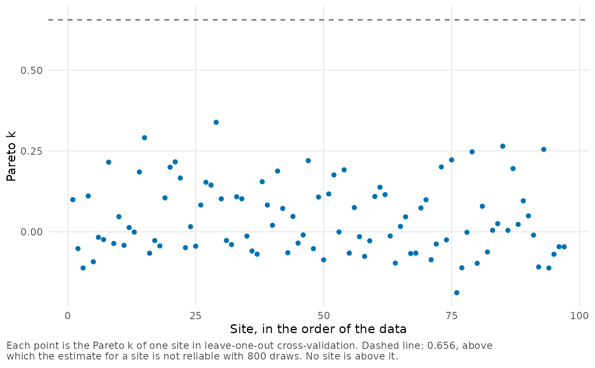
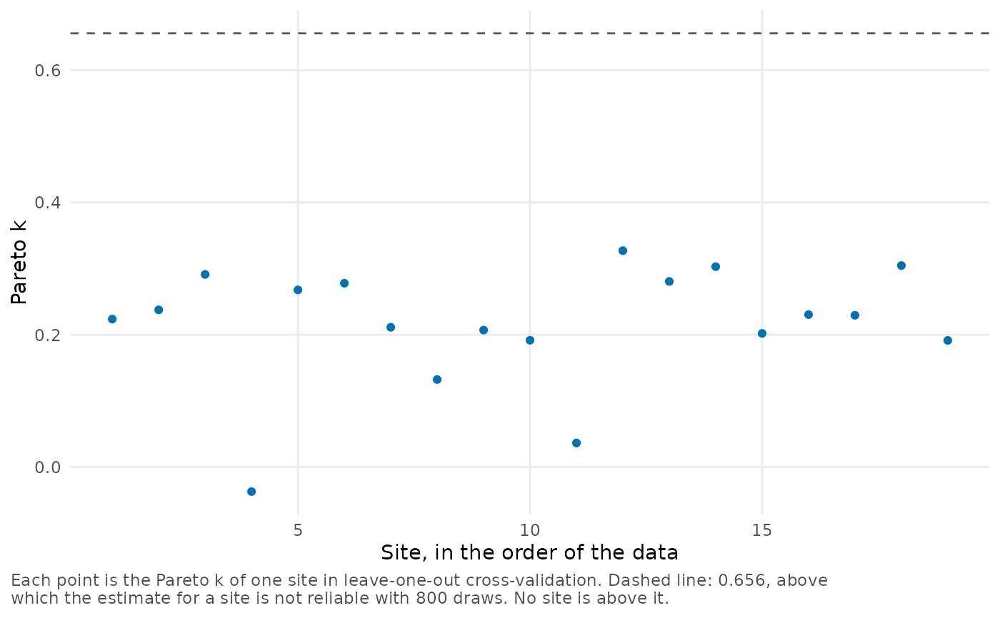

plot_loo() plots the Pareto k value of each site from
loo.bef_fit(), together with the threshold above which the
leave-one-out estimate for a site is not reliable. The threshold depends
on the number of posterior draws and is computed as in the loo package.
Sites above the threshold are labeled.
Arguments
- x
A
bef_fitobject created bybayes_efron_fit().- loo
An optional
looobject, the result ofloo.bef_fit()forx. IfNULL(the default), it is computed.- label
If
TRUE(the default), the sites above the threshold are labeled.- ...
These dots are for future extensions and must be empty.
Details
For \(S\) posterior draws, the threshold is \(\min(1 - 1 / \log_{10} S, 0.7)\) (Vehtari et al., 2024). This is 0.7 for about 2,200 draws or more, and 0.656 for the 800 draws of the fits stored in the package.
Removing a site that is above the threshold would change the posterior
distribution considerably, so the leave-one-out estimate for that site
should not be trusted. See vignette("diagnostics") for a discussion
of this check.
The Pareto k values can take some time to compute when there are many
sites. To avoid computing them again, pass a result of loo.bef_fit()
as loo. This function requires the loo package.
References
Vehtari, A., Simpson, D., Gelman, A., Yao, Y. and Gabry, J. (2024). Pareto smoothed importance sampling. Journal of Machine Learning Research, 25(72), 1-58.
Examples
plot_loo(krw_fit)

# Reuse a result that was computed earlier.
result <- loo::loo(raudenbush_fit)
plot_loo(raudenbush_fit, loo = result)
